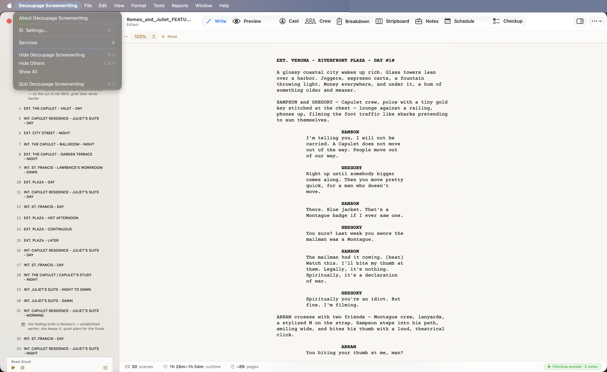
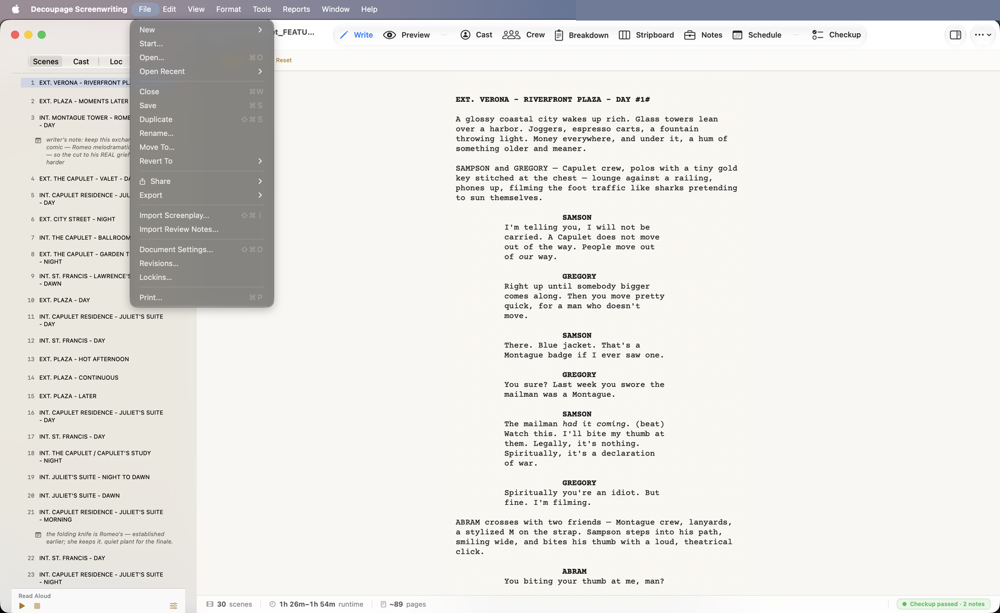
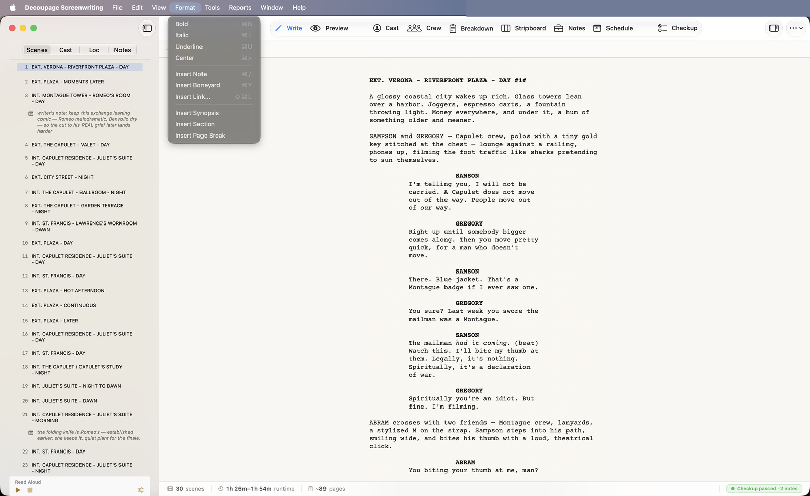
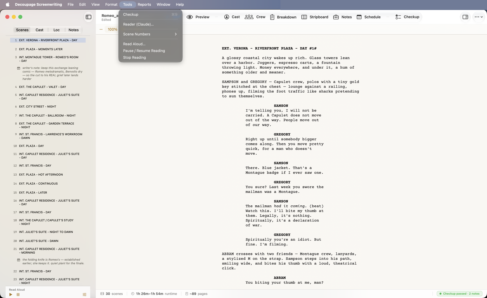

Decoupage Screenwriting

About Decoupage Screenwriting · Settings… (⌘,) · Hide / Quit (⌘Q) — the standard app menu.
File

| Item | Shortcut |
|---|---|
| New / Open / Save / Duplicate | ⌘N / ⌘O / ⌘S / ⇧⌘S |
| Start… (the Welcome window) | — |
| Export ▸ Fountain / PDF / Final Draft / Highland / Review PDF | — |
| Import Screenplay… | ⇧⌘I |
| Import Review Notes… | — |
| Document Settings… | ⇧⌘D |
| Revisions… · Lockins… | — |
| Print… | ⌘P |
Edit
Standard Cut / Copy / Paste / Undo / Redo, plus Edit Title Page… (dimmed on linked docs).
Format
(Write tab only; dimmed on linked docs.)

| Item | Shortcut | Item | Shortcut | |
|---|---|---|---|---|
| Bold | ⌘B | Insert Note | ⌘/ | |
| Italic | ⌘I | Insert Boneyard | ⌘Y | |
| Underline | ⌘U | Insert Link… | ⇧⌘L | |
| Center | ⌘> | Insert Synopsis / Section / Page Break | — |
View
- Show Write / Preview / Cast / Crew / Breakdown / Stripboard / Notes / Schedule / Checkup — ⌘1–⌘9.
- Show/Hide Sidebar — ⌥⌘S · Reference — ⌥⌘R.
- Zoom In / Out / Actual Size — ⌘+ / ⌘− / ⌘0.
Tools

Checkup (⌘9) · Reader (Claude)… · Scene Numbers ▸ Add / Remove · Read Aloud… · Pause / Resume Reading · Stop Reading.
Reports

Script Report… · Deep Read (Claude)… · Reads & Reports… · Structure X-ray…, then production reports grouped by department: Casting · Scheduling · Locations · Camera · Breakdown. (Deep Read and Reader are dimmed until you enable the cloud AI in Settings.)
Window · Help
Standard Window management, and Help → The Decoupage Bible — this guide (with a PDF version for offline reading).
Keyboard shortcuts at a glance
| Shortcut | Action | Shortcut | Action | |
|---|---|---|---|---|
| ⌘1–⌘9 | Switch tabs | ⌘B / ⌘I / ⌘U | Bold / Italic / Underline | |
| ⌥⌘S | Toggle navigator | ⌘/ | Insert note | |
| ⌥⌘R | Toggle Reference | ⇧⌘L | Insert link | |
| ⌘+ / ⌘− / ⌘0 | Zoom in / out / reset | ⇧⌘D | Document Settings | |
| ⌘N / ⌘O / ⌘S | New / Open / Save | ⇧⌘I | Import Screenplay | |
| ⌘P | ⌘, | Settings |
- ✓⌘1–⌘9 switch tabs; ⌥⌘S the navigator; ⌥⌘R the Fountain reference.
- ✓Format (⌘B/⌘I/⌘U, Insert Note ⌘/) works on the Write tab.
- ✓File → Export and the Reports menu are where documents leave Decoupage.
- ✓Help → The Decoupage Bible always brings you back to this guide.